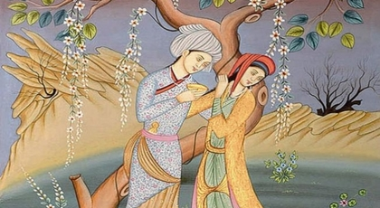

Kerem ile Aslı

Asıl adı Ahmet Mirza olan Kerem, Isfahan Şahının oğludur. Şahın hazinedarlığını yapan Ermeni Keşişinin kızı Aslı ile Kerem birbirlerini severler. Şah Keşişten kızı oğluna ister. Keşiş, bir Müslüman kız vermek istemez. Fakat hükümdarın isteğini reddedemez; bir mühlet ister ve bu mühletin içinde gizlice memleketten kaçar. Kerem de Aslı’nın peşinden yola düşer. İşte, Kerem’in sevdiği kızın ardınca bütün Anadolu’yu baştan başa gezmesi böylece başlar.
Kerem artık yanında sadık arkadaşı Sofu (Kerem’in dilinden: Sofu Kardeş), omuzunda sazı ile bir “Âşık” olmuştur. Her gittiği yerde, her rasladığına sazıyla ve yanık türküleriyle, Aslı’nın izini sorar, ona haber verenler de olur, vermeyenler de… Bazı defa nehirlere, dağlara, kayalara, dağlardaki hayvanlara derdini döker; yolunu bağlayan karlı, boranlı bellerden yol ister. Onun önüne çıkan engeller, bir defa inkisarına uğradılar mı iflah olmazlar. Kerem aşk ateşinde pişe pişe kemale erer, keramet sahibi olur. Allah onun her dileğini yerine getirir.
Bazı şehirlerde Kerem, Aslı Han’a bir zaman kavuşur. Keşişten habersizce bir müddet birbirlerine sevgilerini anlatırlar, dertlerini dökerler: Erzincan Bağlarında ve Kayseri’de olduğu gibi… Sonunda Kerem Aslı’sının peşinden Halep’e varır. Halep Paşasına kendini sevdirir: Paşa, Keşişi tehdit ederek kızını Kerem’e vermeye razı eder. İki sevdalının nikâhları kıyılır. Fakat kötü ruhlu Keşiş onlara son fenalığı yapar: Kızına sihirli bir gerdeklik gömlek giydirir. Bu gömlek son düğmesine kadar açılır, tekrar kapanır imiş. Kerem sevdiğinin düğmelerini bir türlü çözemez. yüreğinden kopup gelen ateşle yanar, kül olur. Kerem’in külleri dağılmasın diye bekleyen Aslı Han’ın saçları, küllerin içinde kalmış bir kıvılcımla tutuşur; iki âşığın ancak külleri birbirine kavuşur.
Sevgililerin birbirine kavuşmasıyla sona ermeyen bir macera olduğu için Kerem hikâyesi toy, düğün ve kış geceleri muhabbetlerinde eğlence vasıtası olan halk hikâyeleri arasında, çok sevildiği halde, başından sonuna kadar anlatılmaz, hattâ birçok yerlerde bunun anlatılmasını günah sayarlarmış. Kerem Erzurum’da hasta yatarken, Aslı Han’ın üç gün sonra geleceğini haber verirler.
O zaman şu türküyü söyler:
Bir han köşesinde kalmışam hasta
Gözlerim kapıda kulağım seste
Kendim gurbet elde gönül heveste
Gelme ecel gelme üç gün ara ver
Al benim sevdamı götür yâre ver.
Erzurum dağları duman dildedir
Başım yastıktadır gözüm yoldadır
Aslı hayın yârdır adam aldadır
Gelme ecel gelme üç gün ara ver
Al benim sevdamı götür yâre ver.
Erzurum dağları kardır geçilmez
Gizli sırdır her adama açılmaz
Ayrılık şerbeti zehir içilmez
Gelme ecel gelme üç gün ara ver
Al benim sevdamı götür yâre ver.
Felek sen mi kaldın bana gelecek
Akıttın göz yaşım kimler silecek
Kerem’e dediler Aslı’n gelecek
Gelme ecel gelme üç gün ara ver
Al benim sevdamı götür yâre ver.